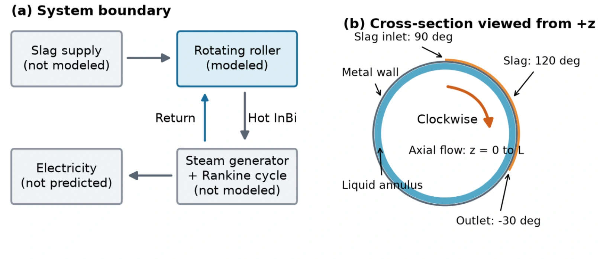
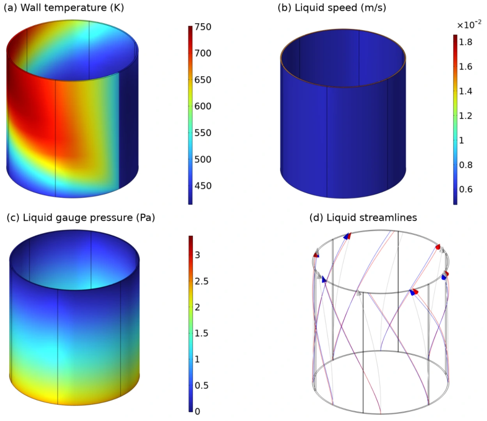

Industrial heat recovery
Steel slag heat recovery
Hot slag carries away energy from steelmaking. I developed a rotating roller concept to recover that heat and used a three-dimensional thermal model to screen the roller geometry and operating conditions.
Modeling heat recovery from slag
I designed the roller concept and its integration into a two-loop power system. Slag covers a 120° sector and transfers heat through the rotating wall to an annular indium–bismuth passage. The hot liquid metal would supply a downstream steam generator. I also proposed an automated trolley to replenish slag between batches.
In COMSOL, I coupled liquid flow to heat transfer through the slag, wall, and liquid metal on a stationary mesh. I accounted for rotation through material transport and represented slag solidification with an apparent heat capacity.


A 3 m screening configuration
I mapped 49 combinations of roller speed and liquid inlet velocity, then screened nine lengths, nine liquid gaps, and eight wall thicknesses.
The screening case uses a 3 m roller, a 20 mm liquid gap, a 25 mm wall, and a rotation rate of 0.05 rpm.
- Recovered thermal power
- 455 kW
- Liquid-metal outlet temperature
- ≈332 °C


Operating and geometry trade-offs
| Change tested | Modeled trade-off |
|---|---|
| Rotation 0.05 to 0.20 rpm | At a fixed slag layer thickness and a liquid inlet speed of 2 mm/s, feed rose fourfold and contact time fell from 400 to 100 s. Recovered power rose from 261 to 502 kW, while heat recovered per kilogram fell from 364 to 175 kJ/kg. |
| Roller length 3 to 4 m | At fixed slag feed, the extra meter recovered about 50 kW more heat and increased ambient losses by about 48 kW. |
| Liquid gap 100 to 20 mm | At fixed mass flows, the narrower gap reduced liquid-metal inventory from 13.60 to 2.84 t. Peak wall temperature rose by about 56 °C. |
| Wall thickness 20–25 mm vs. 40 mm | The thinner walls retained 97–98% of the largest tested heat duty at about 51–63% of the 40 mm wall mass. |
A 3 m roller with a 20–25 mm wall is a candidate for further testing. Targeted mesh refinements changed heat duty by less than 0.5% at the checked points. Validation requires measurements of slag enthalpy and hot liquid-metal properties, plus separate assessments of wall durability and steam-cycle output.
Project recognition
The original system concept earned a national second prize (top 10%) in the 2024 National University Student Energy-Saving & Emission Reduction contest. The team documented the concept in Chinese invention patent application CN 121855261 A.